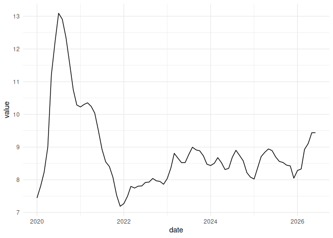

bcchr permite descubrir, describir y descargar series de la Base de Datos Estadísticos del Banco Central de Chile desde R.
La interfaz principal usa nombres simples en snake_case y devuelve tibbles con columnas consistentes. Las funciones de bajo nivel que reflejan directamente las operaciones oficiales GetSeries y SearchSeries siguen disponibles por compatibilidad.
Más información sobre la API del Banco Central en https://si3.bcentral.cl/estadisticas/Principal1/web_services/index.htm.
Autenticación
La API REST del Banco Central requiere un token. Guárdelo en la variable de entorno BCCH_TOKEN, por ejemplo en su archivo .Renviron:
BCCH_TOKEN=su_tokenNo guarde el token dentro de scripts ni lo suba a GitHub. Todos los ejemplos que consultan directamente la API requieren que BCCH_TOKEN esté configurado.
Puede verificar que R lo encuentre sin imprimirlo:
nzchar(Sys.getenv("BCCH_TOKEN"))Uso
Ejemplo completo: tasa de desempleo
Supongamos que queremos obtener la tasa de desempleo de Chile. En la BDE del Banco Central la serie se publica con el nombre tasa de desocupación, por lo que primero buscamos candidatos con resolve_series():
library(bcchr)
# Requiere BCCH_TOKEN configurado; ver Autenticación.
candidatos <- resolve_series(
"desocupacion",
frequency = "MONTHLY"
)
candidatos |> head()
#> # A tibble: 6 × 8
#> series_id frequency spanish_title english_title first_observation
#> <chr> <chr> <chr> <chr> <date>
#> 1 F049.DES.TAS.HIST.10.M MONTHLY Tasas de des… Unemployment… 1986-02-01
#> 2 F049.DES.TAS.INE.02.M MONTHLY Tasa de deso… Unemployment… 2010-03-01
#> 3 F049.DES.TAS.INE.03.M MONTHLY Tasa de deso… Unemployment… 2010-03-01
#> 4 F049.DES.TAS.INE.10.M MONTHLY Tasa de deso… Unemployment… 2010-03-01
#> 5 F049.DES.TAS.INE.D02.M MONTHLY Tasa de deso… Unemployment… 2010-03-01
#> 6 F049.DES.TAS.INE.D03.M MONTHLY Tasa de deso… Unemployment… 2010-03-01
#> # ℹ 3 more variables: last_observation <date>, updated_at <date>,
#> # created_at <date>Entre los resultados está la serie nacional mensual no ajustada del INE, F049.DES.TAS.INE9.10.M. Una vez que conocemos el código exacto, podemos revisar su metadata:
serie <- "F049.DES.TAS.INE9.10.M"
describe_series(serie)
#> Consultando las 4 frecuencias del Banco Central; esto puede tardar unos
#> segundos.
#> # A tibble: 1 × 8
#> series_id frequency spanish_title english_title first_observation
#> <chr> <chr> <chr> <chr> <date>
#> 1 F049.DES.TAS.INE9.10.M MONTHLY Tasa de deso… Unemployment… 2010-03-01
#> # ℹ 3 more variables: last_observation <date>, updated_at <date>,
#> # created_at <date>Luego descargamos las observaciones. get_series() no interpreta nombres: recibe el código exacto y opcionalmente un rango de fechas.
desempleo <- get_series(
serie,
from = "2020-01-01"
)
tail(desempleo)
#> # A tibble: 6 × 3
#> date value status_code
#> <date> <dbl> <chr>
#> 1 2026-01-01 8.28 OK
#> 2 2026-02-01 8.33 OK
#> 3 2026-03-01 8.93 OK
#> 4 2026-04-01 9.11 OK
#> 5 2026-05-01 9.44 OK
#> 6 2026-06-01 9.44 OKY para una visualización rápida:
plot_series(desempleo)
plot_series() devuelve un objeto ggplot, por lo que puede seguir agregando capas o temas de ggplot2 normalmente.
Explorar el catálogo completo
Cuando no tiene todavía un concepto específico para buscar, metadata() permite revisar el catálogo disponible. Si conoce la frecuencia, indicarla evita consultas innecesarias:
metadata("MONTHLY") |> head()
#> # A tibble: 6 × 8
#> series_id frequency spanish_title english_title first_observation
#> <chr> <chr> <chr> <chr> <date>
#> 1 G073.IPC.IND.2018.M MONTHLY IPC General his… Historical H… 1989-04-01
#> 2 G073.IPC.IND.2023.M MONTHLY General (empalm… Headline (CB… 1998-12-01
#> 3 G073.IPC.V12.2018.M MONTHLY IPC General his… Historical H… 1990-04-01
#> 4 G073.IPC.V12.2023.M MONTHLY General (empalm… Headline (CB… 1999-12-01
#> 5 G073.IPC.VAR.2018.M MONTHLY IPC General his… Historical H… 1989-05-01
#> 6 G073.IPC.VAR.2023.M MONTHLY General (empalm… Headline (CB… 1999-01-01
#> # ℹ 3 more variables: last_observation <date>, updated_at <date>,
#> # created_at <date>Si no especifica una frecuencia, metadata() consulta DAILY, MONTHLY, QUARTERLY y ANNUAL. El paquete informa este comportamiento porque requiere cuatro requests. El mensaje puede desactivarse para una llamada con verbose = FALSE o globalmente con:
options(bcchr.verbose = FALSE)API de bajo nivel
bcch_GetSeries() y bcch_SearchSeries() se mantienen para quienes necesiten trabajar directamente con las dos operaciones oficiales del Banco Central y sus nombres de campos originales. Para código nuevo se recomienda la interfaz metadata() / resolve_series() / describe_series() / get_series().